цифровых продуктов
Проектирую там, где нет готовых ответов
Специализируюсь на задачах без референсов — внутренние инструменты, новые продукты, физически встроенные интерфейсы. Погружаюсь в контекст среды и проектирую от её процессов и ограничений.
Интерактивные листы персонажа, внутри которых живёт вся книга правил Dungeon World: ходы, классы, снаряжение, состояния и все связи между ними. Игроку не нужно держать правила в голове — лист показывает только то, что доступно герою сейчас, бросок сам учитывает бафы, дебафы и снаряжение, новый уровень открывает выбор ходов.
Правила связаны между собой, и одна правка легко задевает соседние, поэтому систему держат тесты: при каждом изменении они сверяют механику и тексты с книгой, и перекос всплывает раньше, чем его заметит игрок.
mythhand.space/mythlist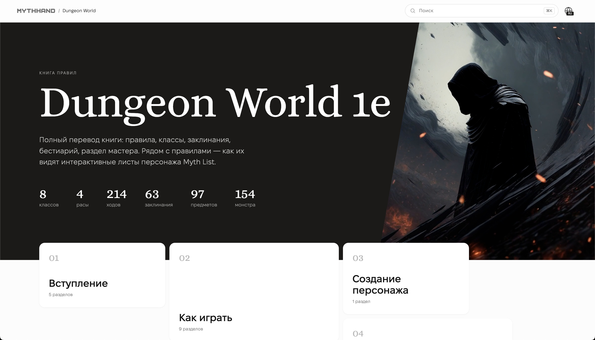
Перевёл книгу правил Dungeon World — правила, классы, заклинания, бестиарий, раздел мастера — и сверстал её веб-версию.
Книгу правил не читают подряд, в ней ищут посреди игры. Поэтому у каждой главы и раздела свой адрес, поиск идёт по всей книге, а рядом с правилом видно, как оно работает в листе персонажа Myth List. Два языка: перевод и оригинал. Термины держит канон перевода, дословность проверяют тесты — чтобы дварф не стал гномом на сотой странице.
mythhand.space/dungeon-world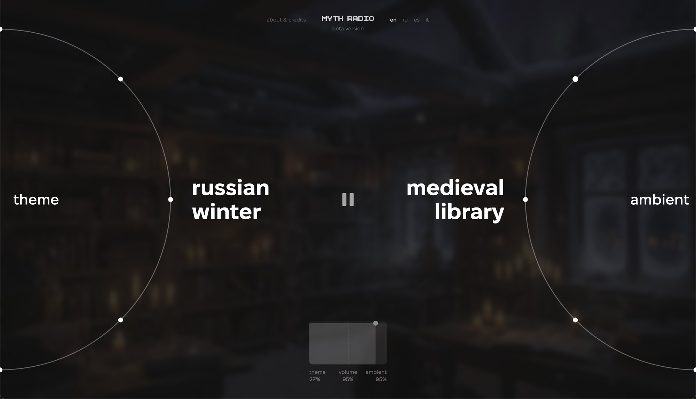
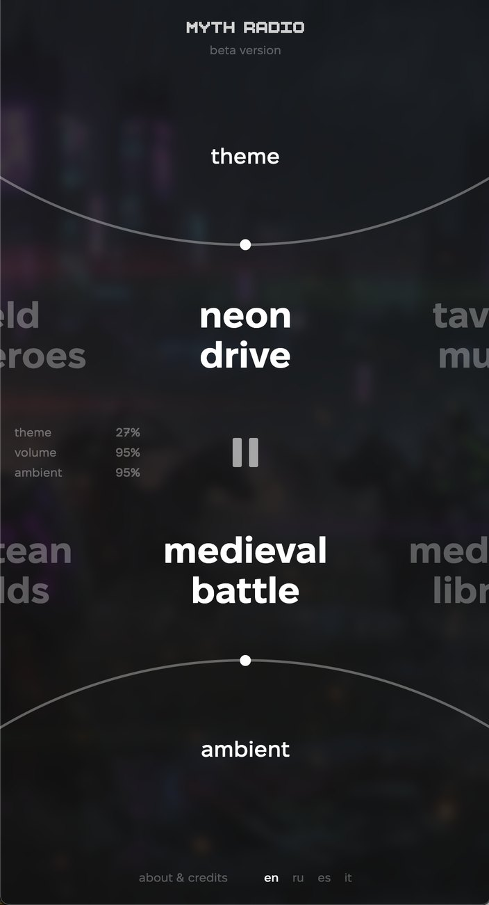
Атмосфера для настольных ролевых игр из двух дорожек: тема задаёт настроение, а амбиент место. Любая пара даёт свою сцену.
Адаптив построен на соотношении сторон экрана, а не на брейкпоинтах: кольца выбора стоят по бокам на широком экране, у углов на квадратном, сверху и снизу на телефоне, и в любом промежуточном состоянии страница остаётся собой. Две громкости сведены в один элемент: квадрат с точкой, по вертикали общая громкость, по горизонтали баланс дорожек.
radio.mythhand.spaceПартия по сети в браузере, без сервера для игры. Нас двое с разработчиком: на нём движок и сеть, на мне всё, что видит игрок.
Интерфейс и отладка всех анимаций: движения карт собраны в словарь и вызываются по смыслу — сыграть карту, сложить пару, вернуть в колоду. Отказ в действии показывается вздрагиванием, и у каждого элемента оно своё.
mythhand.github.io/ReleaseBoardGameP2P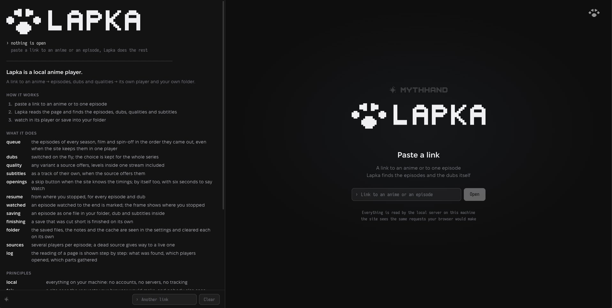
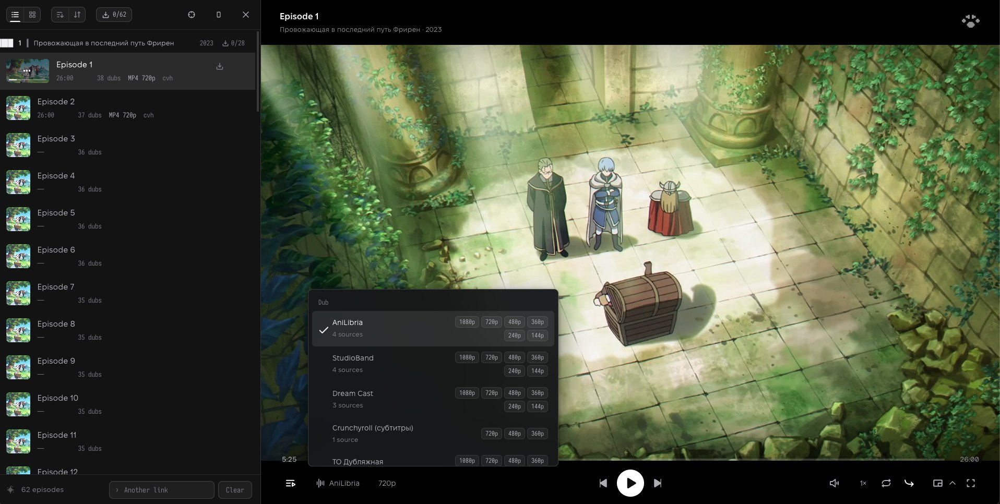
Отправная точка — не устройство плеера, а то, как смотрят аниме: франшизу целиком, в одной озвучке, с перерывами.
Отсюда решения. Все сезоны, фильмы и спин-оффы встают одной очередью в порядке выхода. Выбранная озвучка держится на весь сериал и переключается на ходу, как дорожка, хотя технически это чаще отдельный источник. Просмотр продолжается с того же места для каждой серии и озвучки, а мёртвый источник сам меняется на живой.
Мой первый опубликованный пакет в npm: Lapka запускается одной командой.
github.com/MythHand/LapkaСайт специалиста по Яндекс Директу для производств. До первого макета — десять шагов исследования: аудитория, компании, поле конкурентов, анкеты и раунды вопросов, разбор старого сайта. Так сформировалась база из ответов, фактов и внутренних метрик.
Из «не знаю, что о себе рассказать» по кусочкам собрали позиционирование, а из него — структуру и страницу.
directsolutions.ru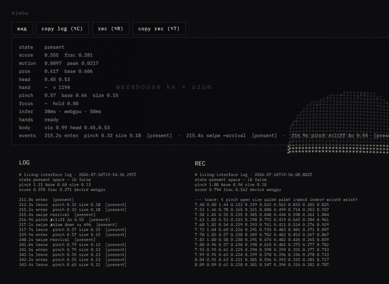
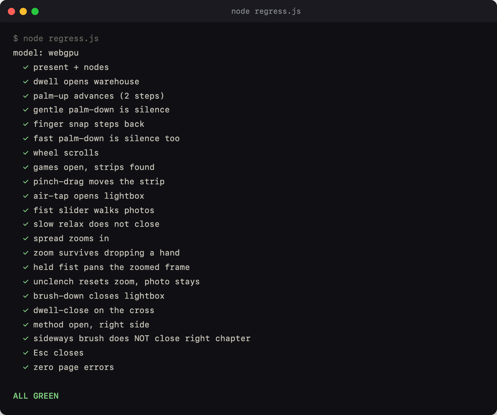
Экспериментальное портфолио, которым управляют руками через обычную вебкамеру. Страница собирает отражение посетителя из частиц, разделы открываются жестом, всё считается на устройстве, видео никуда не уходит. Макетов не было: дизайн рождался сразу в коде, который писал Claude Code.
Жесты я не придумывал заранее — проверял сайт на себе и на знакомых, отмечал, где он меня не понял, и переделывал. Так выяснилось, что взмах рукой читается дважды: туда и на возврате. Решение — у каждого направления свой жест: ладонь листает вперёд, палец возвращает назад. Курсор на главном экране я сначала убрал, но люди не из ИТ без него терялись — вернул. Застрявшему посетителю подсказку показывает призрачная рука: запись моего собственного жеста.
dimbo-design.github.io/dimbo_heavy-cv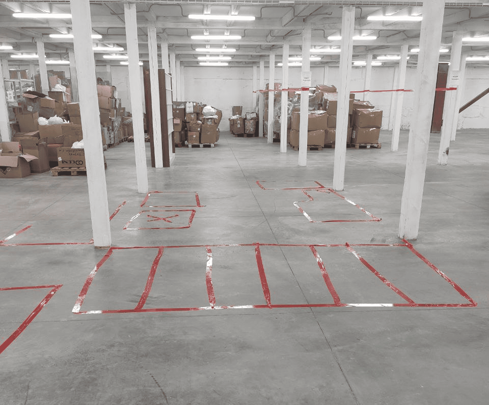
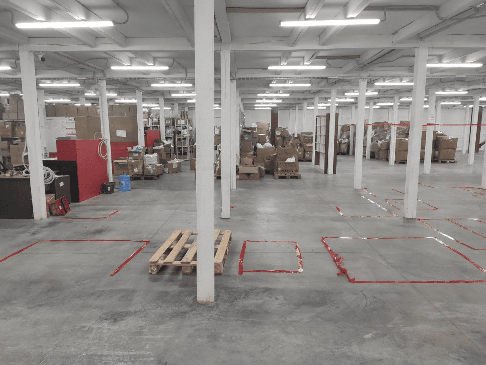
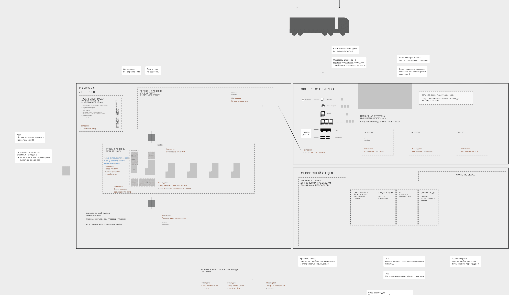
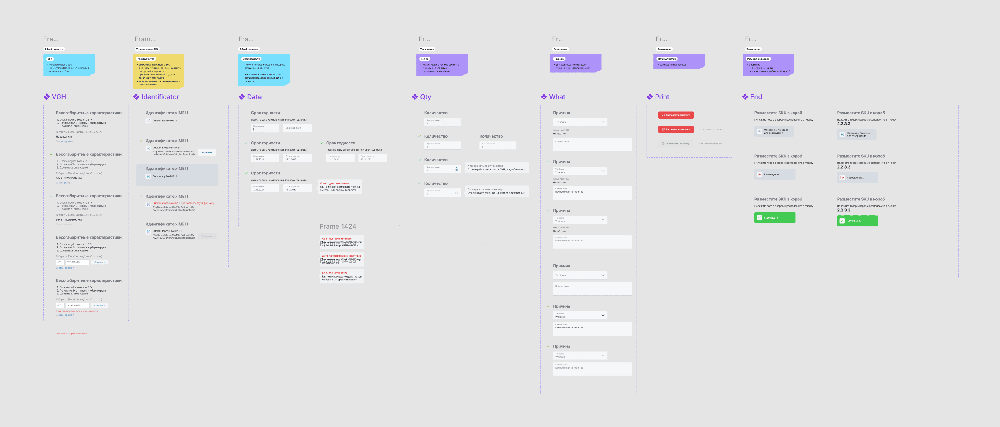
Проблема
Склад решал проблему пропускной способности экстенсивно — добавлял столы пересчёта, усиливал контроль через камеры, накладывал дополнительные отчёты поверх основного процесса. Сканер в существующем интерфейсе был, но таблица вокруг него не была спроектирована под физический процесс: мелкий текст, ручной ввод количества как источник ошибок, отсутствие отдельного потока для проблемного товара — без штрихкода или признаков принадлежности продавцу. SLA в 24 часа — от поступления до готовности товара к продаже — выполнялся на 72%.
Подход
Вышел на склад физически. Изучил операционный процесс изнутри — вплоть до того, что скотчем размечал рабочее место на полу. Выявил ключевое ограничение: существующий интерфейс требовал клавиатуры и мыши, тогда как весь рабочий процесс строится на сканировании — руки заняты, внимание на физическом действии.
Стол пересчёта был центральным узким местом всей приёмки — его переработка потянула за собой переосмысление всех процессов целиком.
Решение
Спроектировал интерфейс под физическую реальность склада: scan-first, без клавиатуры как основного ввода. Шаблонизировал поля с учётом всех зависимостей и развилок — интерфейс разворачивается пошагово, формируя страницу, по которой можно быстро вернуться к любому шагу без потери контекста.
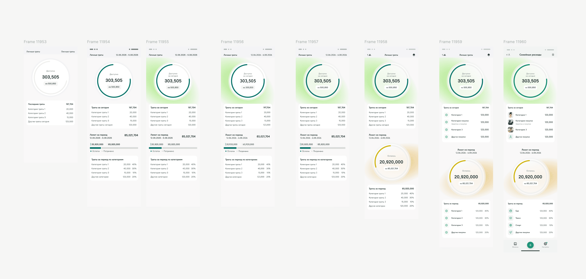
Автор собрал приложение с ИИ для себя и друзей по формуле из статьи. Логика работала, но интерфейс остался типичной генерацией: все показатели одним ровным рядом, без главного и второстепенного.
Я развёл показатели по важности, дал ключевым акцент, а нужной информации — свои места. Свободы строить новое не было, поэтому навигацию я пересобрал внутри привычных заказчику сценариев: пути остались знакомыми, но теперь ведут к тому, ради чего приложение задумано. По логике приложения предложил несколько доработок.


Первая настолка и первый опыт печати. Механики взяты из IT-будней: баги, хотфиксы, AI-события, git-команды над колодой. 37 уникальных карт, правила на 20 страниц написаны нейтрально, как задача в разработку. Иконки карт — генерация по одному шаблону промпта с ручной сборкой.
Работа с типографией оказалась похожа на передачу макетов разработчикам, только теперь учитываешь плотность бумаги, виды печати и экономику тиража.
mythhand.space/release

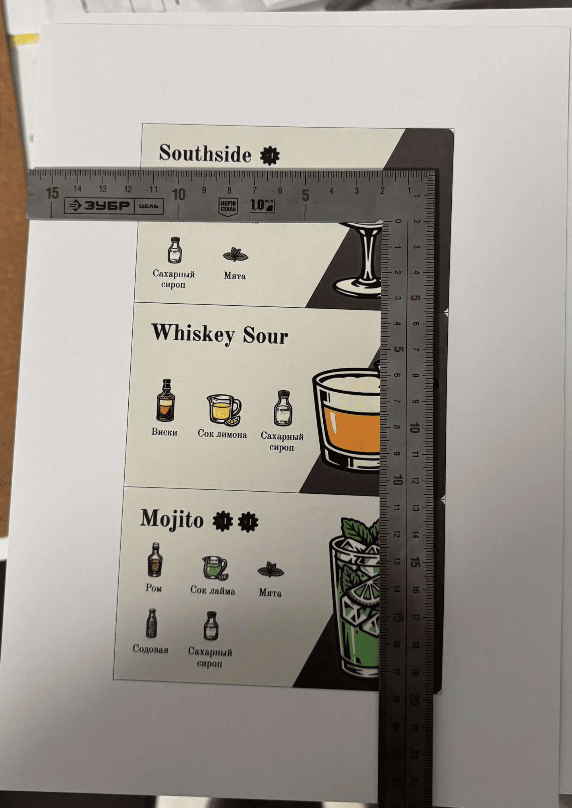
Всё держится на одном правиле: коктейль забирает тот, кто положил последний нужный ингредиент. Из него растут воровство ингредиентов и срыв чужих заказов.
Иллюстрации сгенерированы ИИ и доведены руками. Игра прошла плейтесты. Сейчас проект заморожен на этапе печати.
mythhand.space/barman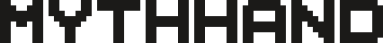
MythHand — мой инди-бренд: настолки, веб-инструменты и сервисы. В основе одна идея: магия есть во всём, и её можно создать самому.
На своих проектах я убедился, что разработка — только часть продукта, и то, что внутри неё кажется главным, в продукте целиком весит иначе.
mythhand.space— декабрь 2024
— май 2024
— апрель 2021
— февраль 2020